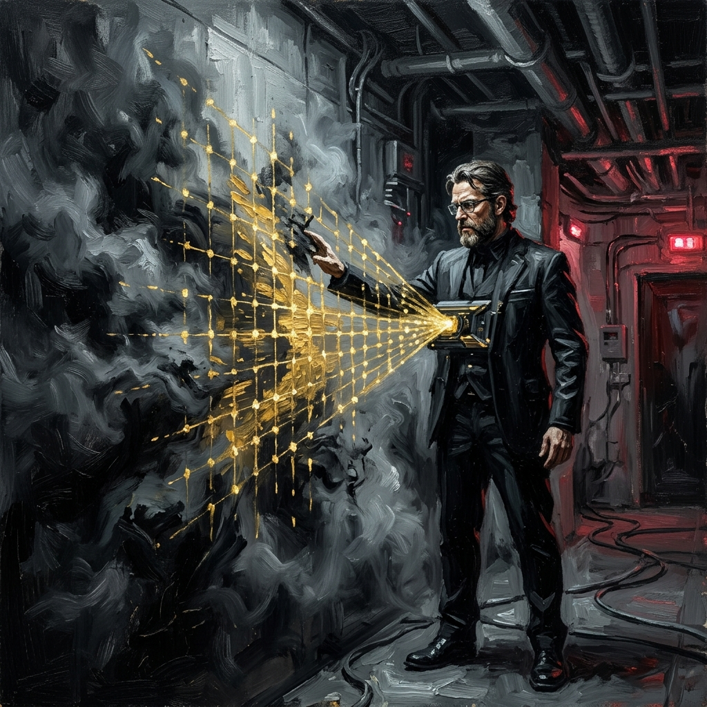
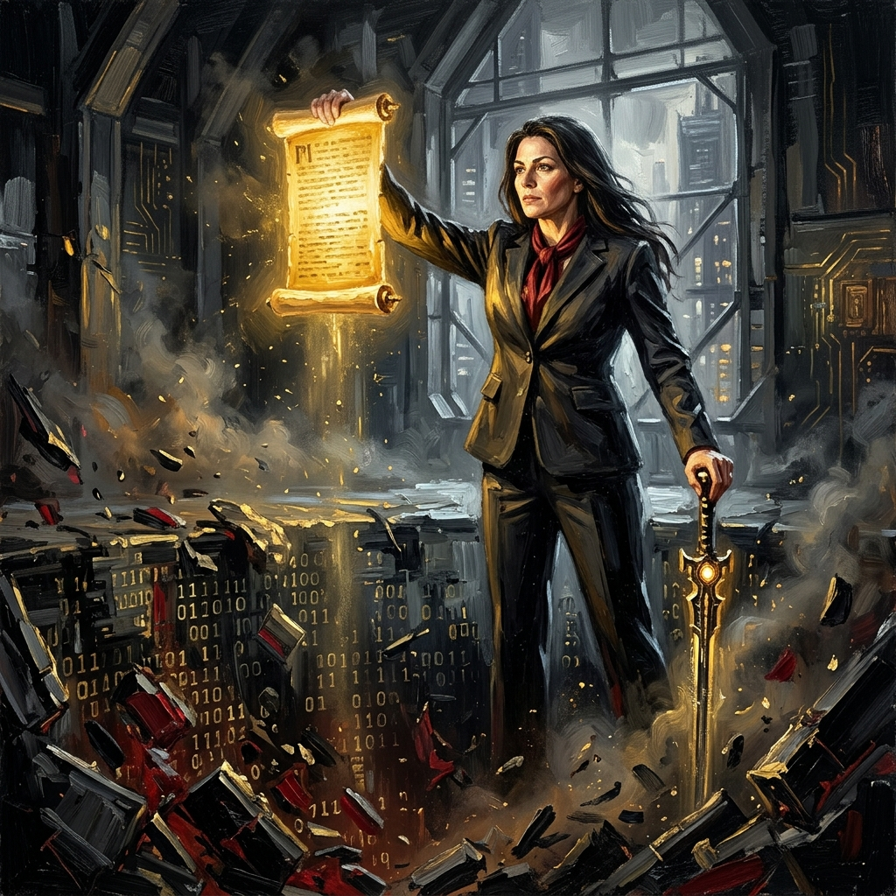
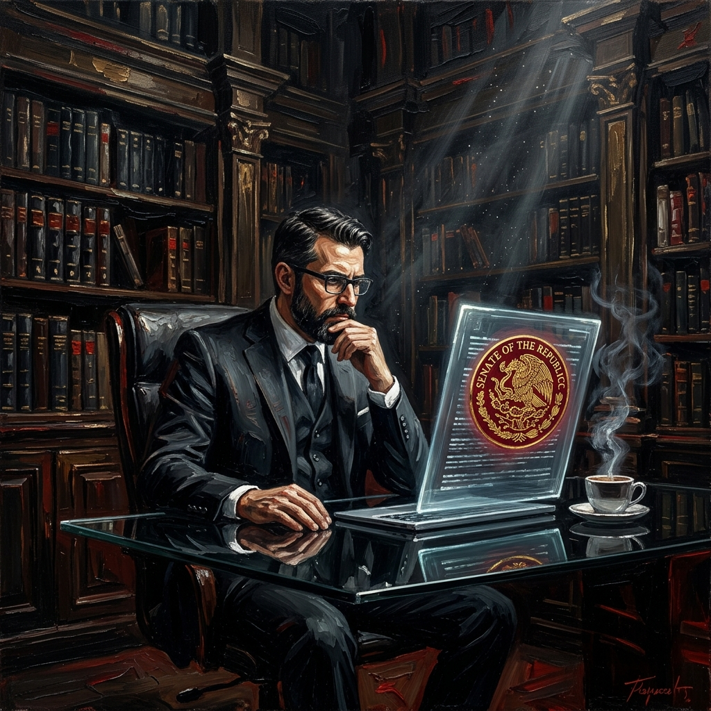
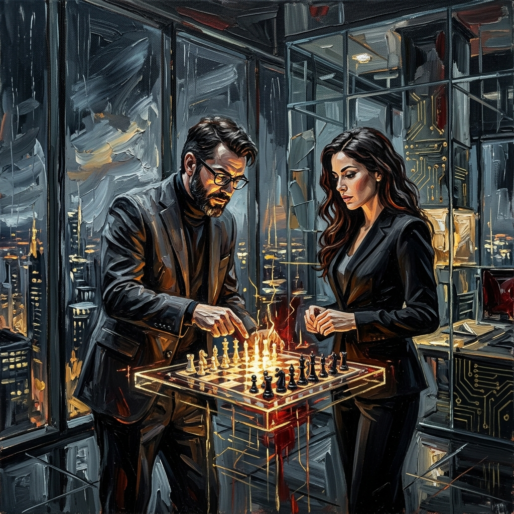

El Cerco de la Razón
Tras la consolidación técnica del Arsenal de la Verdad, el Magisterio Sonorense enfrenta su desafío más crítico: el cerco de la demagogia. En este tomo, desmantelamos las narrativas vacías que buscan confundir a la base y erigimos la estructura final de nuestra soberanía táctica. La razón es nuestro escudo; el dato, nuestra espada.
"La verdad no necesita gritar para ser escuchada."
El Equilibrio de la Demagogia
El análisis forense de la comunicación del MSTE revela un patrón de ruido estocástico. No buscan soluciones técnicas, sino la desestabilización del equilibrio táctico que el Magisterio Sonorense ha construido con rigor. Su promesa de "abrogación total" ignora las restricciones presupuestarias y actuariales, funcionando como un Equilibrio de Inestabilidad diseñado para atrapar a la base en una esperanza vacía.
"La demagogia es el lubricante de la opacidad; la técnica es el motor de la soberanía."
La Trampa de la Abrogación Vacía
La retórica de desmantelar el sistema sin una arquitectura de reemplazo es, técnicamente, una trampa de liquidez para las pensiones. Mientras otros agitan consignas de décadas pasadas, nosotros auditamos el presente. La abrogación sin una ley de sustitución técnica como la Propuesta Intergeneracional Protegida (PIP) es un salto al vacío financiero que pone en riesgo el patrimonio de miles de maestros federalizados.
"Un grito en la plaza no llena un fondo de pensiones vacío."
El Legado del Senado
Basado en el estudio técnico del Instituto Belisario Domínguez, la Propuesta Intergeneracional Protegida (PIP) es nuestra ruta crítica con viabilidad real. Este legado del Senado es la brújula legal que nos permite compactar los quinquenios al Concepto 07 (Sueldo Base) sin comprometer la estabilidad económica. La verdadera victoria magisterial se legisla con datos irrebatibles y sustento jurídico federal.
"La victoria se legisla con ciencia actuarial, no con voluntarismo político."
El Factor X
El "Factor X" no es azar, es la variable oculta en la ecuación del poder magisterial. Mientras las narrativas externas se pierden en la demagogia, Mtra. Paloma y Profe Kristian calibran la respuesta técnica del Magisterio Sonorense. El despertar táctico de la base rompe el Equilibrio de Nash del sistema opaco. No somos simples piezas; somos los arquitectos de una nueva soberanía basada en el dato.
"La alfabetización estratégica es el hackeo definitivo al sistema."La Auditoría Forense
El primer paso para romper el cerco es la transparencia total. La Auditoría Forense al FASM28 no es una petición administrativa; es un acto de soberanía económica. Hemos detectado discrepancias críticas entre las aportaciones federales y los rendimientos reportados. Mientras otros ofrecen disculpas, nosotros preparamos la ruta legal para recuperar cada peso del ahorro docente. La luz forense es el fin de la impunidad.
"La transparencia no se suplica, se impone con auditoría ciudadana."El Oráculo del Yaqui
En el Valle del Yaqui, la resistencia es técnica y profunda. El "Oráculo del Yaqui" representa la coordinación estratégica del sur de Sonora, donde la base decodifica las señales de la autoridad antes de que se conviertan en decretos. No esperamos el golpe; anticipamos el movimiento mediante una red de inteligencia territorial. Esta conexión une al Magisterio Sonorense en un solo bloque de acción.
"La inteligencia territorial es el fin de la sorpresa administrativa."Negociación en el Palacio
Entramos a la mesa de negociación como socios técnicos de la estabilidad social. El MS entiende que el gobierno necesita una base alfabetizada para garantizar la gobernabilidad. Negociamos con el Arsenal de la Verdad: datos del FONE, Ley PIP y el respaldo de miles. La mesa ya no está inclinada; el equilibrio de poder se ha restablecido bajo la lógica de la razón y el dato duro.
"La soberanía se ejerce en la mesa de negociación."El Costo de la Traición
Aplicamos la Teoría de Juegos a la estructura sindical. Hemos calculado el costo de oportunidad para los líderes que eligen la traición. Nuestra estrategia alinea los incentivos para que apoyar al MS sea la única Estrategia Dominante. La traición ya no es rentable; el MS ha elevado el precio del entreguismo hasta hacerlo insostenible frente a la luz de la auditoría forense.
"En el juego del poder, el MS dicta las reglas de la lealtad."La Frontera de Nogales
Desde la frontera norte, unificamos el arsenal técnico definitivo. La conexión Nogales-Hermosillo-Obregón cierra el círculo de la razón magisterial. No hay rincón de Sonora que no haya sido tocado por la alfabetización táctica. El pliego petitorio 2026 es ahora una Sentencia Actuarial irrebatible. La frontera ya no es un límite, es el punto de partida de nuestra expansión soberana.
"Nuestra fuerza es la red inquebrantable de la verdad."El Despertar del 1 de Mayo
La movilización del 1 de Mayo no es una marcha de protesta convencional; es la demostración física de una victoria intelectual y técnica ya consumada. El Jaque Mate a las Fábricas de Ignorancia se ha ejecutado. El Magisterio Sonorense toma el tablero para reconstruirlo sobre los cimientos de la justicia, la ciencia actuarial y la dignidad docente. ¡La victoria es técnica!
"El 1 de Mayo tomamos posesión de nuestro derecho soberano." CERRAR TOMO XIV